Met needs
- Resume optimization tools
- Basic interview practice
- Job matching algorithms
Case Study
Designing an AI-powered interview coaching platform that blends video analysis, encouragement-first feedback, and human mentor support for job seekers.
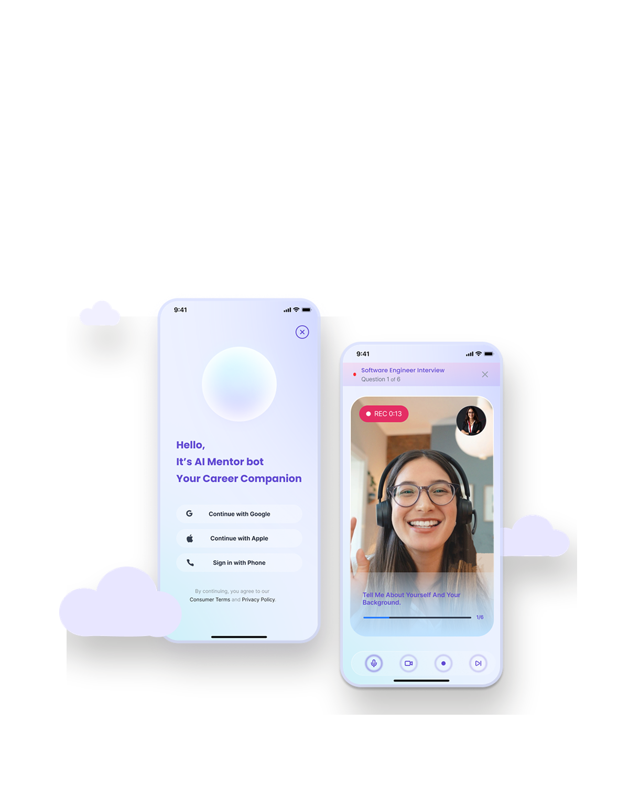
AI Mentor Bot helps North American job seekers prepare for interviews: students, recent graduates, and career changers. The product combines structured video analysis with warm, encouragement-focused coaching.
The main problem: users often keep practicing with AI after repeated failed attempts, without knowing whether they need more practice or a deeper shift in strategy. The product creates a clear path from AI practice to human mentor support.
Existing tools covered resume optimization, basic interview practice, and job matching, but left unmet needs around empathetic failure handling, comprehensive video feedback, and a smooth AI-to-human support funnel.
To validate the gap, I combined 5 semi-structured user interviews with 32 survey responses, then used 20 valid responses for analysis. The strongest pattern was not a lack of motivation: users were practicing repeatedly, but did not know when their problem required human judgment.
One career changer described the problem clearly: "I kept doing mock interviews with AI for weeks. I thought I just needed more practice, but actually I had a completely wrong strategy the whole time."
Deep technical analysis plus warm emotional support and human mentor connection.
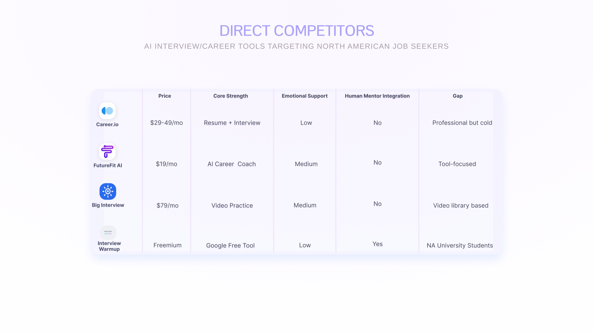
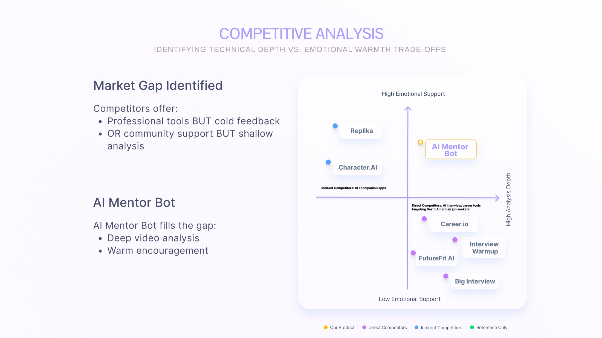
The design centers on recent graduates who feel behind before their first role, and career changers who need both tactical advice and emotional safety while repositioning themselves.
These two groups shaped different product requirements: recent graduates needed confidence and affordable guidance, while career changers needed strategy diagnosis, reassurance, and a way to understand whether repeated rejection pointed to a deeper positioning problem.
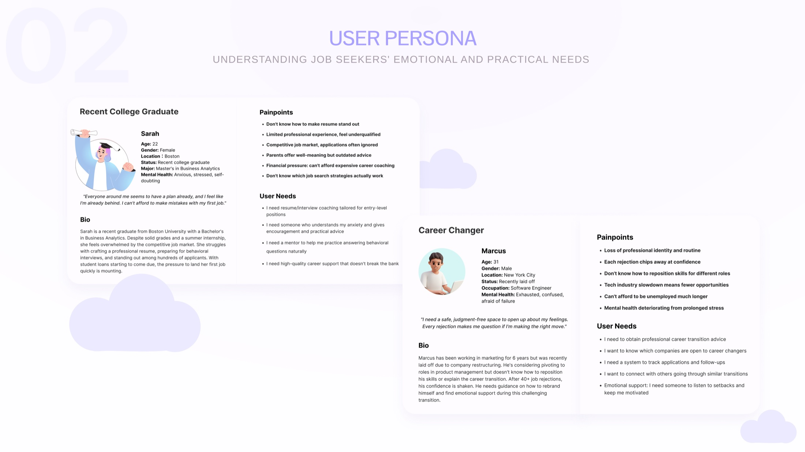
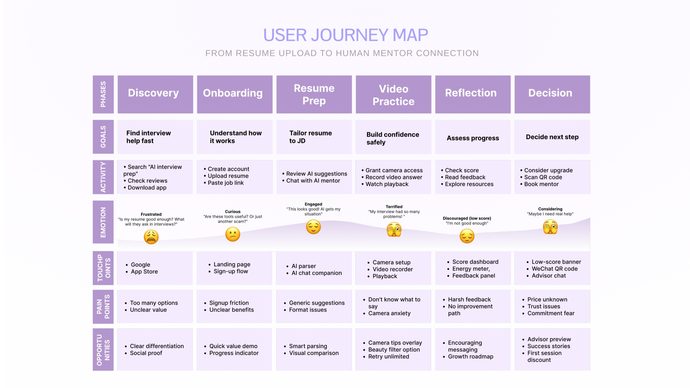
The solution gives users technical analysis and encouragement together. Low scores trigger mentor recommendations instead of generic advice, turning repeated struggle into a guided next step.
Job links become tailored interview questions and realistic prompts.
Design decision: use role-specific keywords from the job link so the experience feels targeted rather than generic.
Feedback is framed as progress, not failure, so users keep moving.
Design decision: replace harsh fail states with directional copy that tells users what to improve next.
Low-score moments create a natural bridge to paid human support.
Design decision: surface mentor support after repeated low-score sessions, so it reads as help rather than an upsell.
Users can review trends, history, and improvement suggestions.
Design decision: show progress over time instead of only a single score, so small improvements remain visible.
The team had to balance technical accuracy, emotional safety, and business goals. These principles kept the experience grounded when feature ideas pulled in different directions.
Feedback should be specific and realistic. A low score should explain what lowered the score, not simply tell users to keep trying.
Result screens frame feedback as a next step forward, reducing shame while preserving useful critique.
AI supports repeated practice, while mentors step in when patterns suggest a strategy gap rather than a skill gap.
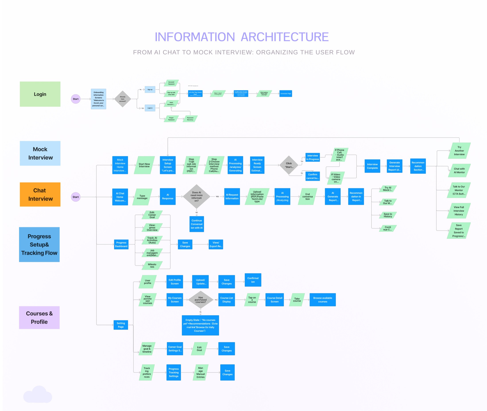
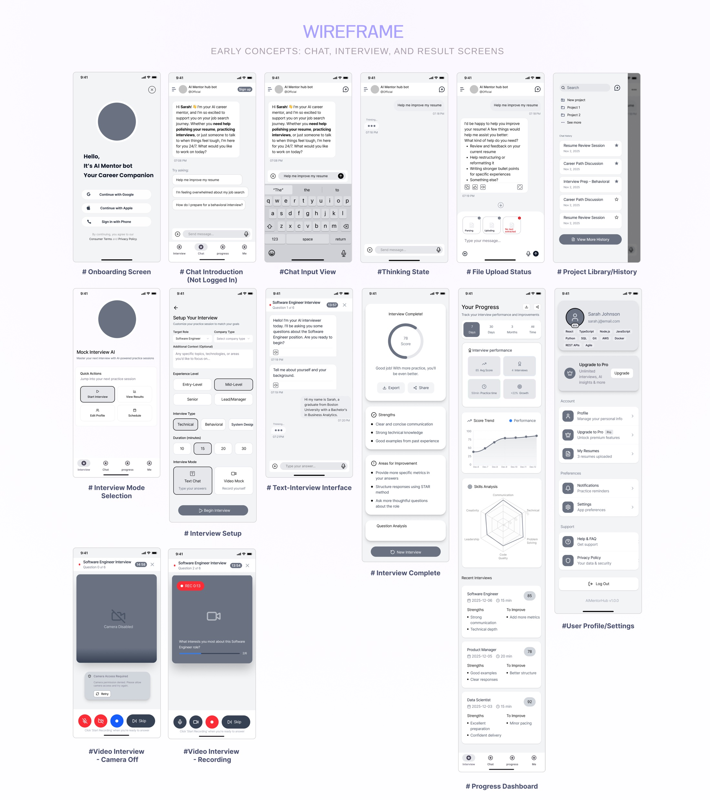
The A/B test compared a text-plus-video path with a direct video mock interview path. Users treated text mode as an avoidance mechanism, while direct video practice felt more realistic and useful.
In a 24-participant validation test, the direct video flow reached a 67% completion rate, compared with 48% for the text warm-up flow. The key insight was that comfort can become avoidance when users are anxious about speaking on camera.
Users could practice with text prompts before recording. Many used it to delay the harder video task.
Users entered a recorded mock interview immediately. This felt more realistic and reduced time to first attempt.
The direct video path became the primary onboarding flow because it better matched the real interview behavior we needed users to practice.
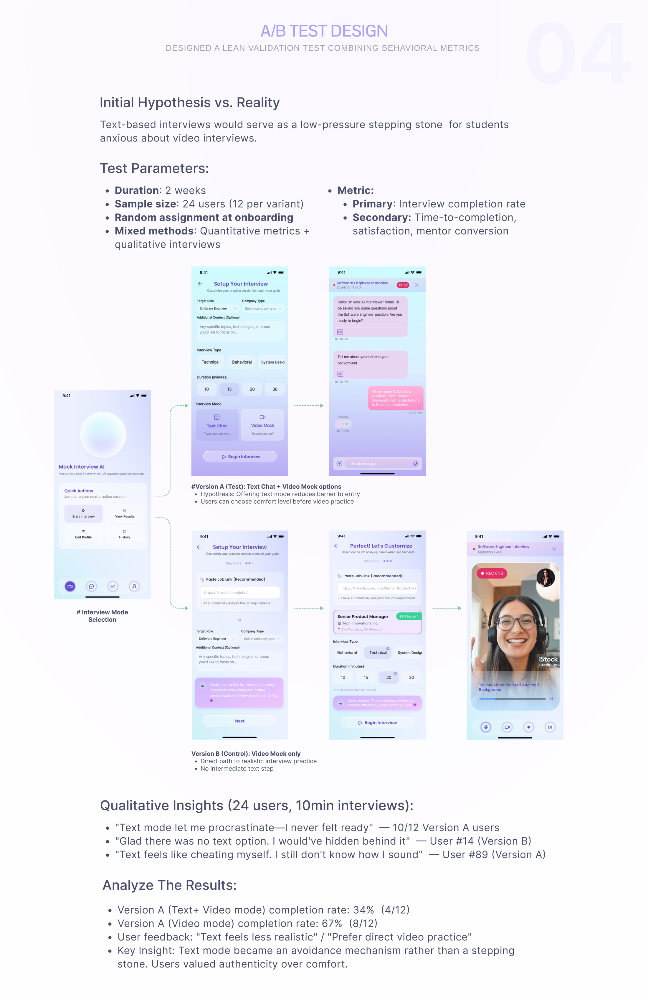
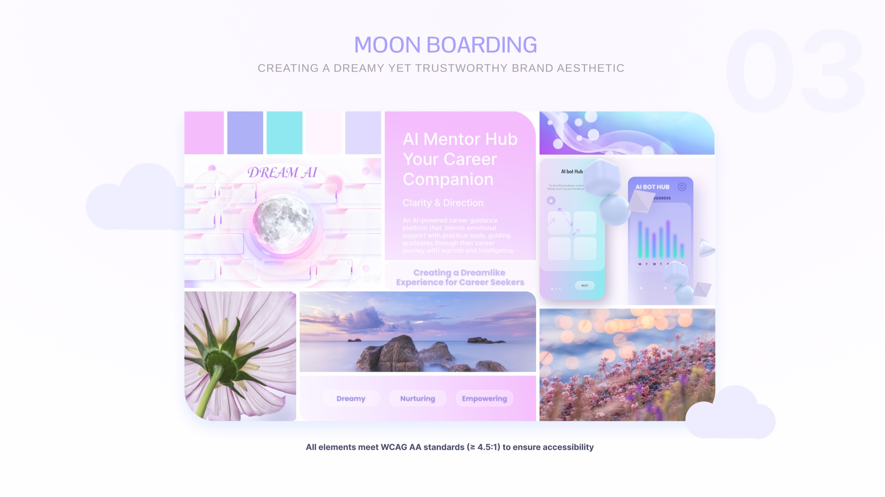
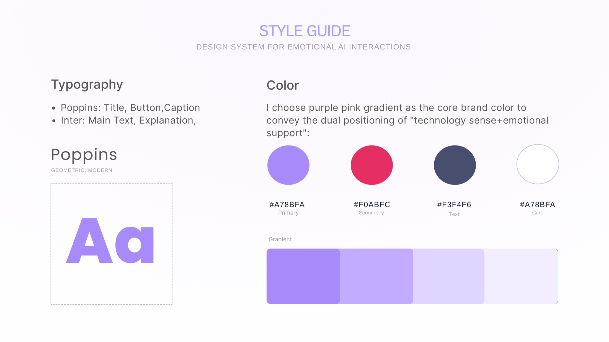
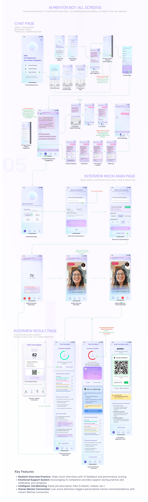
The key learning was that emotionally safe design can improve retention, but comfort should not remove realism. Users needed a practice environment that was kind, specific, and honest.
A/B testing revealed that users preferred realistic challenge over overly safe practice modes.
The 24-user mixed-methods study surfaced decisive patterns without needing large-scale testing.
Compassion as a feature helped reduce abandonment by making stressful feedback feel actionable.
This was my first project as the sole designer on a real product team. Working with a PM and engineers taught me to communicate design rationale not only through visuals, but through logic, constraints, and measurable product behavior.
My biggest learning was that "gentle" is not always helpful. Users did not want vague reassurance; they wanted precise feedback delivered in a way that respected how stressful interviews can feel.
If the product continued, I would build out verified mentor profiles, test peer coaching for accountability, and run a larger study to validate the anxiety reduction finding.
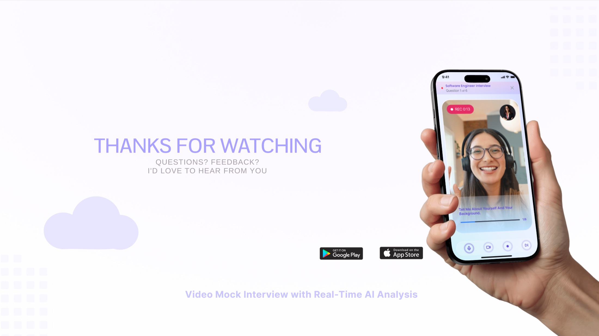